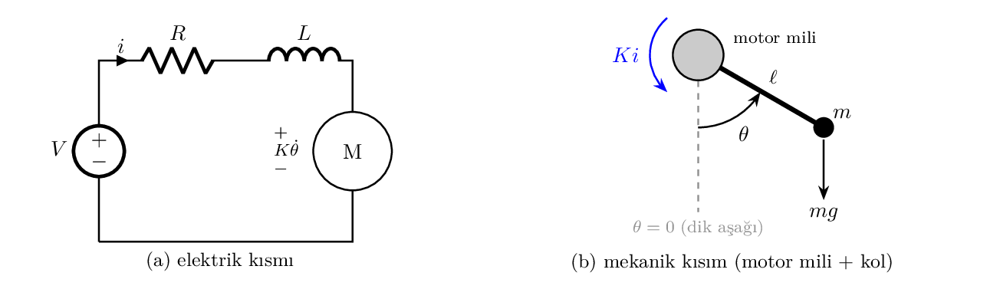
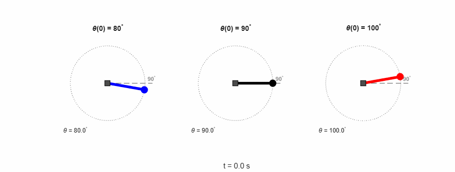
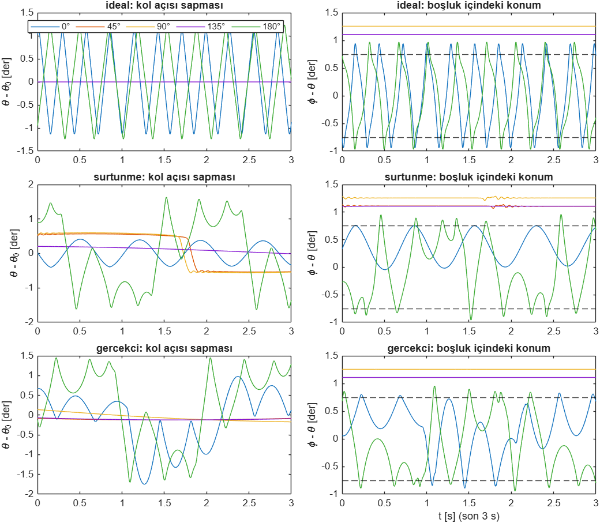
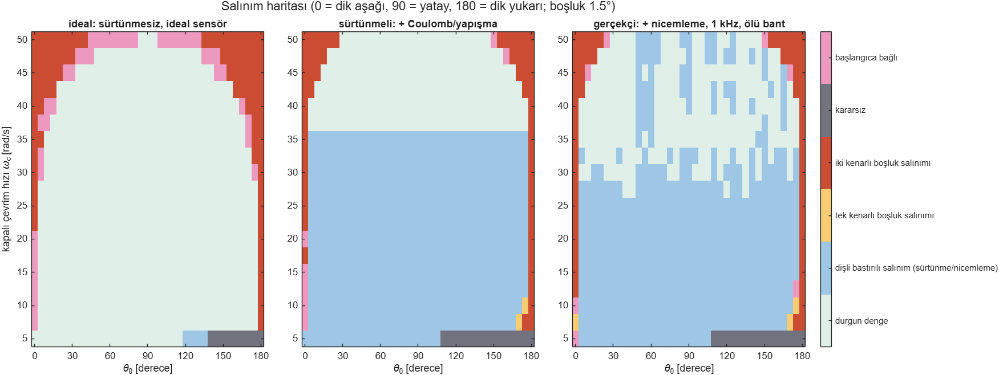
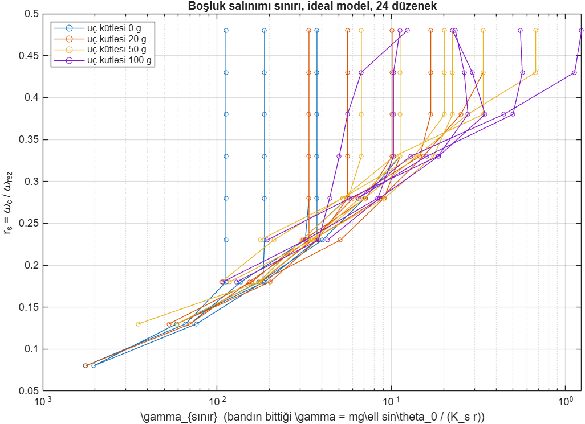
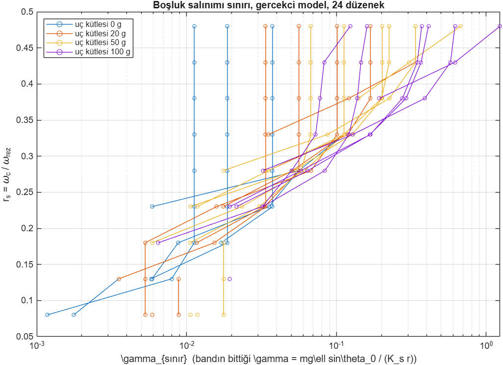

Robot kol araştırma defteri
DC motorlu tek eklemli robot kolunu literatüre bakarak yayına dönüşebilecek bir çalışmaya ve fiziksel bir düzeneğe çevirme çalışması.
Ne yapmak istiyoruz?
- Yayına dönüşebilecek bir çalışma: literatürde açık bulup onu doldurmak.
- Kolu fiziksel olarak yapıp sonuçları deneyle doğrulamak.
- Malzemeyi seçilen yöne göre almak.
Başlangıç noktamız
Önce kolun doğrusal olmayan durum uzayı modelini kurduk ve simülasyonla inceledik. Tek eklemli: tek dönme ekseni (omuz), dirsek yok.
| Konu | Temel modeldeki hali |
|---|---|
| Durumlar | \(x_1 = \theta\) (dik aşağıdan), \(x_2 = \omega\), \(x_3 = i\). Giriş \(u = V\), çıkış \(y = \theta\). |
| Model | \(\dot x_1 = x_2\), \(\dot x_2 = 0.952x_3 - 9.52x_2 - 4.67\sin x_1\), \(\dot x_3 = 2u - 2x_3 - 0.02x_2\) |
| Motor değerleri | CTMS "DC Motor Speed" örneği. Dişli kutusu yok. |
| Kol | \(m = 0.05\) kg, \(\ell = 0.1\) m |
| Çalışma noktası | 90° (yatay), \(u = 4.905\) V. Özdeğerler \(0,\ -9.52,\ -2.00\). |
| Açık çevrim | 80° → 87.2°, 90° kalıyor, 100° → tam tur. Kolu tutmak için geri besleme gerekiyor. |


Literatür taraması
Yöntem
- IEEE Xplore: kurumsal erişimle 26 sorgu, 31 PDF.
- IEEE dışı, ilk tur: Scopus ve Web of Science kampüs dışından açılmadığı için OpenAlex (tüm yayınevlerini indeksleyen açık veri tabanı) ile başlık+özet araması; Springer'dan en yakın rakip makale.
- Web of Science, ikinci tur: Core Collection, tüm yıllar, 12 sorgu (konu alanı: başlık + özet + anahtar kelime). Birleşik 44 kayıt tek tek incelendi; ilgili 5 makalenin tam metni IEEE, MDPI ve Taylor & Francis'ten indirilip okundu.
- İleriye atıf taraması: en yakın makalelere atıf yapan bütün çalışmalar tarandı (Wang 2024'ün 11, Nordin–Gutman anketinin 497, WoS'ta Sun ve ark. 2023'ün 56 atıfı).
Web of Science sorguları
| Sorgu | Sonuç |
|---|---|
| boşluk + yerçekimi + tanımlama fonksiyonu | 0 |
| boşluk + kaymalı / çift girişli tanımlama fonksiyonu | 0 |
| boşluk + yerçekimi + limit cycle / salınım | 2 |
| boşluk + gözlemci (DOB / ESO) + yerçekimi | 1 |
| boşluk + limit cycle + açı / çalışma noktası / duruş | 4 |
| boşluk + ön yük + limit cycle / salınım | 8 |
| boşluk + sarkaç + limit cycle / salınım | 10 |
| boşluk + yerçekimi + robot / kol / eklem | 21 |
Yerçekimi geçen kayıtlarda bu kelime hep başka bir anlamda kullanılıyor: uzay istasyonunda mikro yerçekimi, uzun hidrolik kolun statik sehimi, sarkacın dik dengesi. Okunan 5 tam metnin hiçbiri yerçekimini analiz etmiyor. Çift motorlu 7 eksenli kolda (D-Arm, IEEE RA-L) yerçekimi bilinmeyen bozucunun içine katılmış; deney eklemi bilerek yerçekimsiz kurulmuş. Gemi topu takip sisteminde (Ships and Offshore Structures, 2026) eksen yerçekimine karşı çalıştığı hâlde dengesizlik torku modellenmemiş.
Belirleyici sorgular (başlık + özet, OpenAlex)
| Sorgu | Sonuç |
|---|---|
| boşluk + yerçekimi + tanımlama fonksiyonu | 0 |
| boşluk + yerçekimi telafisi + salınım / limit cycle | 0 |
| boşluk + yerçekimi + tork tersinmesi / sıfır geçişi | 0 |
| boşluk + yerçekimi + robot / kol / eklem / sarkaç | 32 |
| boşluk + limit cycle + robot / kol / servo / motor | 60 |
32 sonucun hiçbiri yerçekiminin açıya bağlı etkisini ya da limit cycle'ı incelemiyor.
Literatürdeki örüntü
- Boşluk + limit cycle çalışmaları hep yatay düzenekler: iki kütleli tahrik, takım tezgâhı, gimbal, döner tabla.
- Tek eklemli kol çalışmaları bile kolu yatay düzleme koyuyor (Wang ve ark. 1999; Malik ve ark. 2009).
- Gerçekte yerçekimi yüklü eklemlerde bile model yerçekimsiz kuruluyor (Kim ve ark. 2009, insansı robot dizi).
- Sarkaç + boşluk çalışmaları yalnızca dik dengeye bakıyor; orada yerçekimi ön yükü sıfır (Kollár ve ark. 2002; Shahruz 2000).
İlk tarama (web aramaları)
| Grup | Örnekler | Not |
|---|---|---|
| Kontrolcü karşılaştırmaları | PID ve LQR, durum geri beslemesi, yerçekimi altında esnek kol | Çoğu esnek kol, simülasyon. |
| Yerçekimi telafisi | düşük maliyetli PD + telafi, kütleye uyumlu kontrol | Çok eklemli kollar. |
| Ucuz motor kusurları | gözlemciyle sürtünme, AhaRobot, çift motorla boşluk | Boşluk zor bir sorun. |
| Eğitim düzenekleri | OpenMCT, MoDiCA-X | Kol yok. |
En yakın çalışmalar
| Çalışma | Ne yapmış | Bizde olup onlarda olmayan |
|---|---|---|
| Sun ve ark. 2023, IEEE TIE | Düşey düzlemde salınan kol, modelde \(M_L\sin\theta_L\). Hedef 90°'de yüksek kazançta 5°, 9 Hz salınım. Çift motorla yapay ön yük. | Yerçekiminin etkisi tartışılmıyor; tek açı; DF analizi yok; çift motor pahalı. |
| Wang ve ark. 2024, Nonlinear Dynamics | Mühimmat yükleme kolu; DF ile limit cycle analizi; doğrusal olmayan ESO ile telafi; deney. | Kol düşey eksen etrafında yatay dönüyor; yerçekimi terimi yok. |
| Ghaffari ve Mohammadiasl 2013, IEEE TMECH | Boşluk ve ön yüklü eksenlerde salınım frekansı; sertlik oranı ölçütü; tezgâhta deney. | Ön yük simetrik iç yay; "tork ön yükü aşmadıkça boşluk görünmez" gözlemi yerçekimine taşınmamış. |
| Esbrook, Tan, Khalil 2014, IEEE TAC | İntegral kontrol + boşluk limit cycle'ının kesin hesabı; sabit referans yalnızca kaydırır. | Bizim ana iddiamız bu önermenin yerçekimli karşı-örneği. |
| Wang ve ark. 2017, IEEE TIE | İki kütlede DF ile limit cycle; yük sensörüyle (tam kapalı çevrim) salınım çıkıyor. | Yük torku sıfır alınmış; kendileri "yüksüzken temas sürekli değil" diyor. |
| Yu ve Tang 2024, IEEE TIE | Doymalı gözlemci; gözlemci bant genişliği artınca kendisi limit cycle üretiyor. | Girişte "ağırlık merkezi boşluk dinamiğini değiştirir" diyor, incelemiyor. |
| Sun ve ark. 2025, IEEE TAES | Gözlemci kazancı + boşluk → limit cycle; DF ile tahmin; takip hatasına göre ayar. | Yerçekimi yok; ayar takip hatasına göre, bizimki açıya göre. |
| Padron ve ark. 2022, IEEE AMC | Sürtünme sıfır hızda, boşluk sıfır torkta tetiklenir. | Hipotezimizin tek cümlelik çıkış noktası. |
37 makalenin ayrıntılı notları: literatur/okuma_notlari.md.
Seçilen yön
İlk web taramasından üç aday yön çıkmıştı. Derin tarama sonunda C yönünü, yerçekimine odaklanarak daralttık.
Ucuz donanımda model ne kadar tutuyor?
Dişli, boşluk, sürtünme, PWM ve enkoder çözünürlüğünün etkisini adım adım ölçmek.
Yük değişince yerçekimi telafisi
Uçtaki kütleyi enkoder ve akımdan kestirip telafi etmek.
Boşluk, gözlemci ve yerçekimi
Dişli boşluğunun ürettiği sürekli salınımın (limit cycle) kol açısına nasıl bağlı olduğunu incelemek; buna göre ayarlanan bir gözlemci önermek.
Hipotez
Dişli boşluğu, iletilen tork sıfırdan geçtiği anda devreye girer. Kolda bu tork, sabit yerçekimi torku \(mg\ell\sin\theta_0\) ile salınımlı dinamik torkun toplamıdır. Yerçekimi bu sıfır geçişlerini açıya göre engeller ya da serbest bırakır.
Çıkarılacak harita
(çalışma açısı \(\theta_0\), konum kazancı \(K_p\)) ya da (\(\theta_0\), gözlemci bant genişliği) düzleminde "limit cycle var / yok" bölgeleri. Yerçekiminin etkisi, bu sınır eğrisinin açıyla nasıl kaydığıdır. Doğal boyutsuz eksen:
\(\gamma = \dfrac{mg\ell\sin\theta_0}{K_s\,r}\) (yerçekimi torku / boşluğu kapatan yay torku; \(K_s\) dişli sertliği, \(r\) boşluk yarı genişliği)
Katkı
- Yerçekimsiz sistemde sabit referans limit cycle'ı yalnızca kaydırır (Esbrook ve ark. 2014, Önerme 2). Yerçekimli kolda bu geçersiz; bunu analitik ve deneysel olarak göstermek.
- Kaymalı (bias) tanımlama fonksiyonuyla (DF) açı–kazanç haritası; anahtarlamalı sistem çözümüyle doğrulama.
- Açıya göre ayarlanan gözlemci: 90° civarında gözlemcinin işinin çoğu yerçekimini telafi etmek, 0° civarında neredeyse tamamı boşluğu telafi etmek.
- Laboratuvar ölçeğinde, parametreleri belgeli bir düzenekte (maxon dişli motor, ESP32, mutlak açı enkoderi) deneysel doğrulama; ortam ve motor sıcaklığı her deneyle birlikte kaydedilir.
Simülasyon
Malzeme almadan önce iki soruyu cevaplamak için: etki gerçekten var mı, ve küçük, laboratuvar ölçeğinde bir düzenekte ölçülebilir mi? Kodlar ve sonuç notları: simulasyon/.
Model
- İki kütleli model: motor ve kol, arada dişli sertliği \(K_s\) ve boşluk (ölü bölge). Kolda yerçekimi torku \(mg\ell\sin\theta\).
- Kol açısı üzerinden PID; integral şart, çünkü yerçekimini o taşıyor.
- Parametreler ilk seçilen motor sınıfı (JGA25-370) ve 15 cm kol için tahmin (\(K_s = 10\) N·m/rad, boşluk 1,5°, 50 g uç). Motor sonradan maxon'a çevrildi; simülasyon maxon değerleriyle tekrarlanacak.
- Üç seviye: ideal; + Coulomb/yapışma sürtünmesi; + 12 bit açı sensörü ve enkoder nicemlemesi, 1 kHz kontrol, 50 Hz hız filtresi, sürücü ölü bandı.
1. Önce bir tasarım kuralı
Türev terimi kol hızından alınınca boşluk olmasa bile döngü \(\omega_c \ge 20\) rad/s'de kararsız (dişli rezonansı ≈ 18,7 Hz). Motor hızından alınınca 60 rad/s'ye kadar kararlı. Sonuç: sönüm motor enkoderinden, konum kol sensöründen.
2. Hipotez görülüyor mu?
\(\omega_c = 20\) rad/s'de 0° ve 180°'de yaklaşık 1,1–1,2° sürekli salınım; dişli zamanın %76–81'ini boşlukta geçiriyor. 45°, 90° ve 135°'de salınım yok; 90°'de iletilen tork sabit \(mg\ell\), dişli hep bastırılı.
3. Açı × kazanç haritası
- Salınımsız bölge 90° etrafında bir "dil"; kazanç arttıkça daralıyor.
- Sınırda başlangıca bağlı bir şerit var: aynı parametrelerde hem durgun denge hem salınım mümkün.
- 180° tarafı daha erken salınıyor: dikte yerçekimi kararsızlaştırıcı, aşağıda dengeleyici yay gibi.
- "Yerçekimi torku salınım torkunu aşınca salınım biter" diye kurulan basit eşik yanlış çıktı → kaymalı tanımlama fonksiyonu analizine gerekçe.
4. Gerçekçi model
Sürtünme her açıda yaklaşık ±0,5°'lik yavaş yapış-kay salınımı yaratıyor, ama dişli bastırılı kalıyor. Boşluk salınımı yine 0° ve 180° civarında. Sonuç: kol açısının genliği tek başına yetmez; ayırt edici ölçüm \(\theta_d\) = motor açısı/N − kol açısı. İkinci açı sensörü (AS5600) bu yüzden zorunlu.


5. Parametre duyarlılığı
- Gerçekçi modelde ilk parametrelerle bant dar: \(\omega_c \le 40\)'ta boşluk salınımı yalnızca 0–3° ve 174–180°'de.
- En güçlü düğme boşluk genişliği: \(\omega_c = 35\)'te bant 1,5° → 6°, 3° → 9°, 5° → 22°; \(\omega_c = 45\)'te 3° ve üstü bütün aralık. → Deneyde ayarlanabilir boşluklu kaplin.
- Uç kütlesinin etkisi tek yönlü değil: hafif kol yerçekimini azaltıyor ama dişli rezonansını yükseltiyor.
6. Motor yeterliliği
JGA25-370 1:34 için durma torku ≈ 0,41 N·m ile: 50 g uç, 3° boşluk, \(\omega_c = 45\)'te RMS tork 0,22 N·m, motor doyumda ve ısınır. 20 g uçta RMS 0,12, tepe 0,25 N·m; rahat. Bu kontrol, motorun maxon'a çevrilmesine yol açan nedenlerden biriydi: seçilen maxon kombinasyonu 2 A akım sınırında çıkışta ≈ 0,96 N·m veriyor (Tasarım kararları).
7. Boyutsuz harita
24 düzenek (uç kütlesi × boşluk × dişli sertliği) iki boyutsuz sayının düzlemine işlendi:
\(\gamma = \dfrac{mg\ell\sin\theta_0}{K_s\,r}\) (yerçekimi torku / boşluğu kapatan yay torku), \(r_s = \dfrac{\omega_c}{\omega_{rez}}\) (kontrol hızı / dişli rezonansı)
- İdeal modelde sınır noktaları dar bir şeritte toplanıyor: düzenekler arası 2–3 kat, \(\gamma\) ekseninde 100 katlık aralığa karşı. Yaklaşık ölçekleme yasası: \(\gamma_{sınır} \approx 3\,r_s^3\).
- Gerçekçi modelde \(r_s \approx 0{,}23\)–\(0{,}38\)'de yasa sürüyor (idealin 0,7–0,85 katı). \(r_s \le 0{,}18\)'de sürtünme baskın.
- Sonuç belirli bir motora bağlı değil; kaymalı tanımlama fonksiyonu \(r_s^3\) ilişkisini öngörebilirse makalenin analitik çekirdeği olur.


Deney planı
Ölçülecek izler
| İz | Beklenti | Kaynak |
|---|---|---|
| Salınım genliği | 0° ve 180° civarında büyük, 90° civarında küçük ya da yok; sınır kazanca göre kayar. | Ana hipotez |
| Salınım frekansı | Açıyla kayar: dişli temasta kaldıkça etkin eylemsizlik değişir. | Márton ve Lantos 2009 |
| Salınımın simetrisi | \(\theta_d\) = motor açısı/N − kol açısı; iki kenara vuruştan tek kenara vuruşa geçiş. | Olsson ve Åström 2001 |
| Etkin boşluk | Ölçülen boşluk açıya bağlı çıkabilir; birkaç açıda ölçülecek. | Jung ve ark. 2004 |
Karıştırıcıları ayırma
- Nicemleme (açı sensörü, enkoder, PWM): gözlemciyle tek başına salınım yaratabilir; ama açıdan bağımsız olur.
- Sürtünme: olaylar hızın sıfırdan geçtiği anlarda toplanır; boşluk olayları torkun sıfırdan geçtiği anlarda.
- Sürücünün PWM ölü bandı: ayrıca ölçülecek, yoksa boşlukla karışır (Malik ve ark. 2009).
- Yerçekimini açıdan bağımsız değiştirme: takılıp çıkarılan uç ağırlıklarıyla.
Hedef çalışma bölgesi (simülasyondan)
- Toplam boşluk ≈ 3° (ayarlanabilir kaplinle 1,5° / 3° / 5°).
- Kapalı çevrim hızı \(\omega_c \approx 30\)–60 rad/s, yani \(r_s \approx 0{,}25\)–\(0{,}40\): ölçekleme yasası orada sağlam, sürtünme gürültüsü az.
- Uç kütlesi ≈ 20 g; açı taraması 0–90°, 0° ve 180° civarında 1°'den ince adımlarla.
- Türev (sönüm) motor enkoderinden; kol hızından alınırsa döngü kararsızlaşıyor.
- Salınım deneyleri birkaç saniye; aralarda motor soğusun, akım INA228 ile izlensin.
Sıcaklık: her deneyin verisi
- İki TMP117 (±0,1 °C): biri ortam, biri motor gövdesi. Her deney kaydına başlangıç ve bitiş sıcaklıkları yazılır; sıcaklık deney boyunca 1–10 Hz ile sürekli kaydedilir.
- Neden motor gövdesi de: bakır sargının direnci ≈ %0,39/°C değişir (aynı gerilimde akım ve tork değişir), dişli yağının viskozitesi yani sürtünme de sıcaklığa bağlıdır.
- Analiz: salınım sınırı ve tanılanan sürtünme sıcaklığa göre karşılaştırılır ("şu sıcaklıkta şu sınır"). Deney tekrarları aynı motor sıcaklığında başlatılır; sapma sonuçlarda raporlanır.
Hazır tarifler
- Boşluk ölçümü: dişlinin ayrıldığı ve yeniden temas ettiği anlar arasında iki sensörün açı farkı (Yamada ve ark. 2016).
- Gözlemcide nicemlemeye karşı iki ayrı Q filtresi, model indirgeme, ayrık zamana çevirme (Kim ve ark. 2009).
Gerçek donanıma geçince
Temel modeldeki motor değerleri CTMS kılavuzundaki örnek motordan; dişli kutusu yok. Gerçek motor (maxon DCX 22 L + GPX 22, 26:1) dişli kutulu ve model buna göre değişecek.
| Değişen | Etkisi |
|---|---|
| Dişli oranı \(N\) | \(N = 26\). Kola giden tork \(N\) katına çıkar. Kolun eylemsizliği motora \(1/N^2\) ile yansır. |
| Motor değerleri | \(R, L, k_t, J_m\) maxon kataloğundan; sistem tanılamayla yalnızca doğrulanacak. Sürtünme \(b\) tanılanacak. |
| Sıcaklık | Sargı direnci \(R(T) \approx R_0\,[1 + 0{,}0039\,(T - T_0)]\); motor gövde sıcaklığı ölçüldüğü için modele girebilir. |
| Dişli boşluğu | Modele ölü bölge olarak girecek; iki kütleli model gerekecek (motor + kol, arada sertlik \(K_s\) ve boşluk \(2r\)). |
| Sürtünme | Coulomb + yapışma; boşluktan ayrı tanılanacak. |
| PWM ve sürücü | Darbeli gerilim, ölü bant, akım sınırı. |
| Açı ölçümü | Motor enkoderi + kol milinde ikinci sensör. Kol milindeki sensörle döngü kapatmak limit cycle riskini artırır; deney için istenen durum. |
Tasarım kararları
Çalışma yayına yönelik ve ileride genişletilecek (iki eklem, daha hızlı döngü, gözlemci denemeleri). İlk listedeki markasız parçalar iki koşulu sağlamadığı için değiştirildi: üretici belgesi eksiksiz olmalı ve çözünürlük ölçülen boşluğun çok altında olmalı. Ayrıntılı hali: donanim/tasarim_kararlari.md.
| Görev | İlk seçim | Yeni seçim | Neden |
|---|---|---|---|
| Motor, dişli, enkoder | JGA25-370 / JGB37-520 (markasız) | maxon DCX 22 L + GPX 22 LZ + ENX 16 | Parametreler belgeli; enkoder çıkışta ≈ 70 kat ince |
| Sürücü | TB6612FNG | DRV8874 (Pololu) | TB6612FNG 1,2 A'i sürekli veremiyor |
| Denetleyici | ESP32 (herhangi kart) | ESP32-DevKitC (Espressif) | Aynı çip, üreticinin kendi kartı |
| Kol açısı | AS5600, 12 bit | AMT22, 14 bit | Doğruluk ±0,2° garanti; mıknatıs hizası yok |
| Akım | INA219, 12 bit | INA228, 20 bit | Çözünürlük ≈ 256 kat |
| Sıcaklık | — | TMP117 × 2 | Sonuçları sıcaklıkla ilişkilendirmek |
1. Motor: neden maxon?
| maxon (seçilen) | JGA25-370 1:34 (ilk seçim) | |
|---|---|---|
| Dişli | GPX 22 LZ, 26:1, azaltılmış boşluk | Düz dişli, 34:1 |
| Dişli boşluğu | 0,85° (üretici) | Bilinmiyor |
| Enkoder, çıkışta | 1024 CPT × 4 × 26 ≈ 106.500 sayım/tur (≈ 0,0034°) | 11 × 4 × 34 ≈ 1.500 (≈ 0,24°) |
| Motor (12 V sargı) | Nominal 29,5 mN·m / 1,30 A; durma 150 mN·m / 6,54 A; \(k_t\) 22,9 mN·m/A; R 1,84 Ω; rotor ≈ 8 g·cm² | Tedarikçi verileri tutarsız |
| Fiyat | ≈ 472 € (+ KDV, kargo, gümrük) | ≈ 600 TL |
- Modeldeki her parametre üretici kataloğunda; tanılama yalnızca doğrulama için. Makaledeki düzenek tablosu doğrudan belgeye dayanır.
- Dişlinin kendi boşluğu küçük ve belgeli; deneydeki boşluğu ayarlanabilir kaplin belirler, deney değişkeni temiz kalır.
- İnce enkoder, türev teriminin alındığı motor hızını çok daha az gürültüyle verir.
- Rotor eylemsizliği simülasyonda varsayılanın yaklaşık yarısı: dişli rezonansı yükselir, kontrolcü hızına pay kalır. Simülasyon maxon değerleriyle tekrarlanacak.
- Eksileri: fiyat; dişli ve enkoder yalnızca kombinasyon olarak satılıyor; enkoder RS-422 çıkışlı (3,3 V alıcı gerekir); durma akımı 6,54 A olduğundan sürücünün akım sınırı ≈ 2 A'e ayarlanacak.
2. Sürücü: TB6612FNG neden çıktı?
Toshiba veri sayfasında 1,2 A bir mutlak sınır; önerilen çalışma aralığı en fazla 1,0 A, izin verilen kayıp gücü 0,78–1,36 W. Yeni motorun nominal akımı 1,3 A. DRV8874 (TI çipi, Pololu kartı): 2,1 A sürekli, 4,5–37 V, 1,8–5 V mantık, akım ölçüm çıkışı (≈ 1,1 V/A) ve çevrim çevrim akım sınırlama.
3. ESP32 ileride yeterli mi?
| İhtiyaç | ESP32 | Durum |
|---|---|---|
| 1 kHz döngü + gözlemci | 240 MHz, çift çekirdek, tek duyarlıklı FPU | Rahat |
| Motor enkoderi | Donanım darbe sayacı (PCNT), kuadratür, gürültü filtresi | Rahat (tam hızda ≈ 340 kHz kenar/sn) |
| SPI + I²C sensörler | Donanım SPI ve I²C | Rahat |
| IoT | Dahili Wi-Fi | Ek kart gerekmez |
Dikkat edilecekler: çift duyarlıklı (double) hesap yazılımla ve yavaş, gözlemci float ile yazılacak; Wi-Fi açıkken kontrol döngüsü ayrı çekirdeğe sabitlenecek ve döngü zamanlaması her deneyde kaydedilecek. İki eklem ve 5 kHz üstü döngüler sınıra yaklaşırsa doğal yükseltme: kontrol Teensy 4.1'e (600 MHz, çift duyarlıklı FPU, 4 donanım enkoder çözücüsü), ESP32 yalnızca IoT için.
4. Kol açısı: AMT22
| AS5600 | AS5047P (ams OSRAM) | AMT22 (seçilen) | |
|---|---|---|---|
| Çözünürlük | 12 bit (0,088°) | 14 bit (0,022°) | 14 bit (0,022°) |
| Doğruluk | Mıknatıs hizasına bağlı | Mıknatıs hizasına bağlı | ±0,2° (üretici) |
| Arayüz | I²C | SPI + ABI, çok düşük gecikme | SPI 2 MHz, 100 µs güncelleme |
| Montaj | Ayrı mıknatıs | Ayrı mıknatıs | Mile manşonla (2–8 mm) |
Boşluk 1,5–5° iken \(\theta_d\)'nin doğruluğu belirleyici. ±0,2°, en küçük toplam boşluğun (≈ 2,35°) yaklaşık %9'u.
5. Akım: INA228
INA219 12 bit; INA228 ve INA229 aynı 20 bitlik delta-sigma çekirdek (ofset en çok ±1 µV, kazanç hatası en çok ±%0,05, 85 V ortak mod). Fark yalnızca arayüz: INA228 I²C, INA229 SPI. INA229 için hazır, bilinen markalı kart bulunamadığından Adafruit'in INA228 kartı seçildi. 20 bit ADC çözünürlüğü; 1 kHz döngüde ≈ 0,5 ms dönüşüm süresi kullanılacak, etkin çözünürlük yine INA219'un çok üstünde. Şant motor hattında; PWM geçişleri ölçümü bozarsa besleme hattına alınır, anlık akım için DRV8874'ün CS çıkışı da kaydedilir.
6. Sıcaklık: TMP117 × 2
±0,1 °C (−20…50 °C), 16 bit, I²C. Biri ortam sıcaklığı, biri motor gövdesi. Motor sıcaklığı sonuçları ortamdan daha çok etkiler: bakır sargı direnci ≈ %0,39/°C değişir, dişli yağının viskozitesi (sürtünme) sıcaklıkla değişir. Her deneyde sıcaklık sürekli kaydedilir.
7. Haberleşme
| Bağlantı | Protokol | Not |
|---|---|---|
| maxon ENX 16 → AM26LV32E → ESP32 | RS-422 → 3,3 V kuadratür → PCNT | Diferansiyel hat PWM gürültüsüne dayanıklı |
| AMT22 → ESP32 | SPI, 2 MHz, mod 0 | 5 V besleme, 3,3 V çıkış |
| INA228 → ESP32 | I²C, 0x40 | 1 MHz hızlı mod |
| TMP117 × 2 → ESP32 | I²C, 0x48 / 0x49 | 1–10 Hz |
| ESP32 → DRV8874 | EN'ye 20 kHz PWM, PH yön, nSLEEP HIGH | Akım sınırı ≈ 2 A |
| ESP32 ↔ bilgisayar | USB seri, 921600 baud | Veri kaydı; kontrol döngüsünde Wi-Fi yok |
Kol açısının SPI'ye alınması 1 kHz döngüdeki I²C yükünü azaltıyor; I²C'de yalnızca akım (1 kHz) ve yavaş sıcaklık okumaları kalıyor.
Malzeme ve alışveriş
Her görev için değerlendirdiğimiz bütün parçalar, fiyatları ve seçilme ya da elenme nedenleriyle. Seçilen satırlar renkli. Fiyatlar üretici ya da yetkili satıcı sitelerindeki liste fiyatları (aksi yazmadıkça KDV, kargo ve gümrük hariç, 1 adet); değişebilir. Fiyatı bulunamayanlarda "teklif" yazıyor.
Toplam maliyet
| Düzen | Motor | Diğer parçalar | Toplam (yaklaşık) | Not |
|---|---|---|---|---|
| Seçilen | maxon DCX 22 L + GPX 22 LZ 26:1 + ENX 16 1024: ≈ 472 € | ≈ 13 € + ≈ 136 $ + küçük parçalar | ≈ 485 € + 136 $ | Her parametre belgeli; en ince enkoder; dişli boşluğu 0,85° |
| maxon, standart dişli | DCX 22 L + GPX 22 A 21:1 + ENX 16: ≈ 436 € | aynı | ≈ 449 € + 136 $ | 36 € daha ucuz; dişli boşluğu 1,05° |
| Ekonomik, bilinen marka | Pololu 37D 30:1, 64 CPR: 60,95 $ | aynı | ≈ 13 € + 197 $ | Enkoder kaba (0,19°), dişli boşluğu ve rotor eylemsizliği belgesiz, durma akımı 5,5 A |
"Diğer parçalar": ESP32-DevKitC ≈ 13 €, DRV8874 × 2 = 23,88 $, AMT22 73,72 $, INA228 14,95 $, TMP117 × 2 = 23,00 $; ayrıca AM26LV32E, Mean Well adaptör, rulman, mil, vida ve 3B baskı.
1. Motor, dişli kutusu ve enkoder
| Seçenek | Özellik | Fiyat | Değerlendirme |
|---|---|---|---|
| maxon DCX 22 L 12 V + GPX 22 LZ 26:1 + ENX 16 EASY 1024 | Durma 150 mN·m / 6,54 A; dişli 0,7 N·m sürekli, boşluk 0,85°; çıkışta ≈ 106.500 sayım/tur (0,0034°) | 220,41 + 150,63 + 101,05 ≈ 472 € | Seçildi. Bütün parametreler katalogda (R, L, \(k_t\), rotor eylemsizliği); dişli boşluğu küçük ve belgeli, deneydeki boşluğu kaplin belirler. Eksi: pahalı, Türkiye satış ortağı yok, enkoder RS-422. |
| maxon, aynı motor + GPX 22 A (standart) 21:1 | Boşluk 1,05°, 0,7 N·m sürekli | dişli 114,21 € (toplam ≈ 436 €) | İyi bir tasarruf seçeneği; dişlinin kendi boşluğu biraz daha büyük. |
| Faulhaber 2232 SR + 20/1R + IEH2-4096 | Faulhaber'in eşleşen takımı; enkoder 4096 çizgi/tur | motor ≈ 112 € (bayi), dişli + enkoder: teklif | maxon ile aynı sınıf; tam takım fiyatı bulunamadı. maxon'a alternatif olarak teklif istenebilir. |
| Pololu 37D, 12 V, 30:1, 64 CPR (#4752) | Durma ≈ 14 kg·cm / 5,5 A (tahmini); çıkışta 1920 sayım/tur (0,19°); düz + helis dişli | 60,95 $ | Ekonomik orta yol. Bilinen satıcı, ama dişli boşluğu ve rotor eylemsizliği belirtilmemiş, enkoder maxon'dan ≈ 55 kat kaba, durma akımı sürücünün sürekli sınırının üstünde. |
| JGB37-520, 12 V, 1:30 (direnc.net) | Durma 5 kg·cm / 2,3 A; enkoder 11 darbe/tur (çıkışta ≈ 1320, 0,27°) | 639 TL | Elendi: markasız, veri sayfası kısmi, büyük rotor (\(\omega_c\) ≈ 35 ile sınırlı). |
| JGA25-370, 12 V, 1:34 | Durma ≈ 0,41 N·m (tedarikçiye göre değişiyor); 11 darbe/tur | Türkiye'de enkoderli sürümü bulunamadı | Elendi: markasız, veriler tutarsız, tork sınırda. |
| SAMM L tipi, 12 V, 1:42 | Durma ≥ 8,5 kg·cm; 13 darbe/tur | ≈ 826 TL | Elendi: stokta yoktu, enkoder kaba. |
| Hobi servo (SG90, MG996R) | İçinde hazır konum kontrolcüsü | — | Elendi: kendi kontrolcümüzü devre dışı bırakır. |
2. Geliştirme kartı (denetleyici)
| Seçenek | Özellik | Fiyat | Değerlendirme |
|---|---|---|---|
| Espressif ESP32-DevKitC (WROOM-32E) | 240 MHz çift çekirdek, tek duyarlıklı FPU, donanım enkoder sayacı (PCNT), Wi-Fi | ≈ 13 € (KDV dahil, Conrad) | Seçildi. 1 kHz döngü, bir motor enkoderi ve SPI/I²C sensörler için rahat; Wi-Fi IoT katmanı için hazır. Eksi: double yavaş, Wi-Fi döngü zamanlamasını bozabilir (ayrı çekirdeğe sabitlenecek). |
| Espressif ESP32-S3-DevKitC-1 (N8) | 240 MHz çift çekirdek, vektör komutları, dahili USB, daha çok bellek | 15,95 $ (Adafruit) | Güçlü alternatif; bizim iş yükümüzde ESP32'ye belirgin üstünlüğü yok. |
| Teensy 4.1 (PJRC / SparkFun) | 600 MHz Cortex-M7, çift duyarlıklı FPU, 4 donanım enkoder çözücüsü, Ethernet | 31,50 $ (SparkFun) | Önerilen yükseltme yolu: iki eklem ve 5–10 kHz döngüde kontrol buraya taşınır, ESP32 yalnızca IoT için kalır. |
| STM32 Nucleo-G474RE (ST) | 170 MHz Cortex-M4F, motor kontrolüne özel zamanlayıcılar, donanım enkoder arayüzü | 20,13 $ (DigiKey) | Endüstride motor kontrolü standardı; kurulumu ve öğrenmesi daha zahmetli. |
| Arduino Uno R3 / R4 Minima | R3: 8 bit 16 MHz, 2 KB RAM; R4 Minima: 48 MHz Cortex-M4 | R4 Minima ≈ 23 € (KDV dahil) | Elendi: 1 kHz döngü + gözlemci + veri kaydı için sınırda, donanım enkoder sayacı ve bellek yetersiz. |
3. Motor sürücü
| Seçenek | Özellik | Fiyat | Değerlendirme |
|---|---|---|---|
| Pololu #4035 (TI DRV8874) | 2,1 A sürekli, 4,5–37 V, akım ölçüm çıkışı (≈ 1,1 V/A), ayarlanabilir akım sınırı | 11,94 $ (× 2 = 23,88 $) | Seçildi. Motorun nominal akımına (1,3 A) pay bırakıyor; akım sınırı ≈ 2 A'e ayarlanacak. İkinci kart yedek ya da ikinci eklem. |
| Adafruit DRV8871 (#3190) | Tek kanal, ≈ 3,6 A tepe, direnç ile akım sınırı | ≈ 10,4–11,6 $ (Mouser) | Yedek seçenek; akım ölçüm çıkışı yok. |
| Pololu TB6612FNG (#713) | 2 kanal, 1 A sürekli (Pololu), Toshiba: 1,2 A mutlak sınır, önerilen ≤ 1,0 A | 4,95 $ | Elendi: yeni motorun nominal akımı 1,3 A; akım ölçümü yok. |
| L298N modülü | Bipolar transistör, ≈ 2–3 V kayıp | — | Elendi: kayıp gerilim akıma göre değişir, hassas kontrolde kötü, ısınır. |
| BTS7960 modülü | 40 A sınıfı | — | Elendi: gereğinden çok büyük, markasız modüller. |
4. Kol açısı sensörü
| Seçenek | Özellik | Fiyat | Değerlendirme |
|---|---|---|---|
| Same Sky (CUI) AMT22, 14 bit tek tur (AMT222B-V) | 14 bit (0,022°), doğruluk ±0,2°, SPI, 100 µs güncelleme, mile manşonla (2–8 mm) | 73,72 $ (DigiKey) | Seçildi. Doğruluk üretici garantisinde ve mıknatıs hizasına bağlı değil; kapasitif, tozdan etkilenmiyor. |
| ams OSRAM AS5047P + adaptör kartı (AS5047P-TS_EK_AB) | 14 bit, SPI + ABI, çok düşük gecikme (DAEC) | ≈ 16,7 $ – 21,7 € (stok sorunlu) | İyi ve ucuz; ama doğruluk mıknatıs hizasına bağlı, adaptör kartı bazı satıcılarda üretimden kalkmış görünüyor. |
| AS5600 modülü | 12 bit (0,088°), I²C | ≈ 258 TL | Elendi: markasız modüller, doğruluğu belgesiz, çözünürlük 4 kat düşük. |
| Yüksek sınıf optik / manyetik mutlak enkoder (ör. RLS AksIM-2) | 18–20 bit | teklif | Gereğinden hassas ve pahalı; doğruluk sınırımız AMT22 ile karşılanıyor. |
5. Akım sensörü
| Seçenek | Özellik | Fiyat | Değerlendirme |
|---|---|---|---|
| Adafruit INA228 (#5832) | TI INA228: 20 bit delta-sigma, I²C, 85 V ortak mod, ofset ≤ ±1 µV, kazanç hatası ≤ ±%0,05; %0,1 şant | 14,95 $ | Seçildi. INA229 ile aynı çekirdek; hazır, bilinen markalı kart. |
| TI INA229 | Aynı çekirdek, SPI (10 MHz) | hazır kart bulunamadı | TI değerlendirme kartı ya da kendi PCB'miz gerekirdi. |
| Adafruit INA219 (#904) | 12 bit, I²C, 26 V | — | Elendi: çözünürlük INA228'in ≈ 256'da biri. |
| Hall etkili modüller (ACS712 vb.) | Analog çıkış | — | Elendi: gürültülü, ESP32'nin gürültülü ADC'si gerekir. |
6. Sıcaklık sensörü
| Seçenek | Özellik | Fiyat | Değerlendirme |
|---|---|---|---|
| Adafruit TMP117 (#4821) × 2 | TI TMP117: ±0,1 °C (−20…50 °C), 16 bit (0,0078 °C), I²C | 11,50 $ (× 2 = 23,00 $) | Seçildi. Biri ortam, biri motor gövdesi; aynı I²C hattında (0x48, 0x49). |
| Sensirion SHT45 | Sıcaklık + nem | — | Nem de ölçer; doğruluk değerini veri sayfasından doğrulamadık. Nem ölçmek istenirse eklenebilir. |
| DS18B20 | ±0,5 °C, 1-Wire | — | Elendi: 5 kat daha az doğru; piyasada çok taklidi var. |
| NTC termistör | Analog | — | Elendi: kalibrasyon ve ESP32 ADC gerekir. |
7. Diğer parçalar
| Parça | Seçim | Fiyat | Neden |
|---|---|---|---|
| Enkoder alıcısı | TI AM26LV32E + SOIC-16 adaptör (× 2, biri yedek) | teklif (birkaç $) | maxon enkoderinin RS-422 çıkışını ESP32'nin 3,3 V girişine çevirir. |
| Güç kaynağı | Mean Well 12 V, ≥ 3 A | teklif | Bilinen marka, düzgün regülasyon; motor nominali 1,3 A, akım sınırı 2 A. |
| Rulman | SKF / NSK / FAG × 2, kol mili çapında | rulmancı | Kol mili motordan ayrı döner; boşluk kaplini ve kol açısı ölçümü ancak böyle. |
| Kol ve ağırlıklar | 15 cm alüminyum lama, ≈ 20 g değiştirilebilir uç ağırlığı | hırdavat | Yerçekimi torkunu açıdan bağımsız değiştirmek için. |
| Gövde, boşluklu kaplin | 3B baskı; kaplin 1,5° / 3° / 5° | baskı | Ana deney değişkeni; toplam boşluk ≈ 0,85° (dişli) + kaplin. |
Düzenek nasıl birleşiyor
Boşluklu kaplin
donanim/alisveris_listesi.md.Yayın
- Konferans değil dergi: dergi sunum istemiyor, süreç yazılı.
- Dil (Türkçe dergi ya da İngilizce IEEE dergisi) makale olgunlaşınca danışman hocayla seçilecek.
- Abonelik modelli dergiler (ör. IEEE/ASME TMECH, IEEE TIE) normalde ücretsiz; açık erişim dergileri ücretli.
Sıradaki adım
- maxon yapılandırıcısında kombinasyonu oluşturmak (DCX 22 L 12 V + GPX 22 LZ 26:1 + ENX 16 EASY 1024): kesin fiyat, çıkış mili çapı, Türkiye'ye gönderim.
- Simülasyonu maxon değerleriyle tekrarlamak (rotor eylemsizliği, \(k_t\), \(R\), oran 26, dişli boşluğu 0,85°): kontrolcü hızı payı ve tork.
- Sipariş: diğer parçalar yetkili distribütörden.
- Beklerken: boşluk kaplini ve gövdenin 3B tasarımı (mil çapı belli olunca).
- Beklerken: kaymalı tanımlama fonksiyonu türetimi (adım adım), \(\gamma_{sınır} \approx 3\,r_s^3\) ilişkisiyle karşılaştırma.
- Malzeme gelince: sistem tanılama (motor eylemsizliği, sürtünme, ölü bant, boşluğun birkaç açıda ölçümü), ardından açı taraması deneyleri.
- Ahmad 1985 (ICRA) ve Kodama ve Shirakawa 1968 (IEEE TAC) makalelerini indirmek; kampüsten Nordin ve Gutman 2002 anketi.
Geliştirme yönleri
Bulgularımızdan doğal olarak çıkan yönler, yakından uzağa. Önce ana çalışma bitirilecek: hipotezin deneyle doğrulanması ve açıya bağlı gözlemci.
Bu düzenekle doğrudan
Açıya göre ayarlanan gözlemci
Gözlemci kazancı kol açısına göre değiştirilir; sabit kazançlı gözlemci ve literatürdeki yöntemlerle (LADOB, değişken kazançlı gözlemci) karşılaştırılır.
Hareket sırasında boşluk
Kol hareket ederken salınımlı ve salınımsız bölgelerden geçer. Yörüngeyi salınımlı bölgeleri hızlı geçecek ya da orada kazancı düşürecek şekilde planlamak.
Uç kütlesini kestirme
Salınım sınırı yerçekimi torkuna bağlı. Sınırın nerede olduğunu ölçerek kolun taşıdığı yük kestirilebilir.
Boşluk aşınmasını izleme
Dişliler aşındıkça boşluk büyür ve salınım bandı genişler. Bandı ölçerek aşınma çalışırken anlaşılır (kestirimci bakım).
Daha ileri
Yerçekimi dengeleme yayları
İşbirlikçi robotlar ve dış iskeletler yerçekimini yayla dengeler. Ama yerçekimi dişliyi bastırıp salınımı engelliyor: dengelenen kolda bu "bedava ön yük" kaybolur ve salınım artabilir. Pratikte gerçek bir ödünleşim; literatürde görülmedi.
İki eklemli kol
İkinci eklemde yerçekimi torku iki açıya birden bağlı; harita üç boyuta çıkar.
Farklı dişli türleri
Harmonik dişli, sikloidal dişli ya da 3B baskı dişliler aynı boyutsuz kurala uyuyor mu?
Farklı türde katkılar
Açık kaynaklı eğitim düzeneği
Ucuz parçalarla, boşluk ve yerçekimi etkilerini gösteren bir kontrol deney seti. Ticari setlerin gizlediği gerçek kusurları görünür kılar (Purdue 2023 ile aynı motivasyon).
Öğrenmeye dayalı kontrol
Açıya göre ayarı elle değil, uyarlamalı ya da öğrenen bir kontrolcüyle bulmak.
- MQTT ile ölçüm yayını: açı, akım, sıcaklık, salınım genliği.
- Bilgisayarda ya da Raspberry Pi'de Mosquitto (MQTT sunucusu) ve Node-RED / Grafana ile canlı pano.
- Uzaktan deney: panodan hedef açıyı ve kazancı değiştirip sonucu izlemek ("remote lab").
- Aşınma ya da aşırı ısınma için otomatik uyarı (geliştirme yönü 4 ile bağlantılı).
Ek: Araştırma günlüğü
Yukarıdaki bölümlere nasıl vardığımızın sırası: her adımda neden yaptık, ne yaptık, ne bulduk, bulduğumuzu nereye bağladık. Simülasyon grafikleri Simülasyon bölümünde. Ayrıntılı notlar: literatur/okuma_notlari.md, literatur/ieee_disi/tarama_ozeti_2026-10-18.md, simulasyon/sonuclar_2026-10-18.md.
Başlangıç: temel model
- Neden
- Modelini kurduğumuz tek eklemli, DC motorlu kolu fiziksel bir düzeneğe ve yayına dönüşebilecek bir araştırmaya taşımak.
- Ne yaptık
- Kolun doğrusal olmayan durum uzayı modelini ve 90° çalışma noktası analizini başlangıç kabul ettik. Modelde dişli kutusu yoktu.
- Sonuç
- "Kolu PID ile 90°'de tut" tek başına yeni bir çalışma değil; literatürde bir açık bulmamız gerekiyordu.
- Bağlantı
- → Adım 2: literatürde açık arama.
İlk web taraması ve üç aday yön
- Neden
- Hangi konuların doymuş, hangilerinin açık olduğunu kabaca görmek.
- Ne yaptık
- Kontrolcü karşılaştırmaları, yerçekimi telafisi, ucuz motor kusurları ve eğitim düzenekleri üzerine web araması.
- Sonuç
- Üç aday: (A) ucuz donanımda modelin sınırı, (B) yük değişince yerçekimi telafisi, (C) boşluk + sürtünme için gözlemci. Deneysel çalışmalar çoğunlukla esnek kol, çok eklemli kol ya da pahalı düzeneklerde.
- Bağlantı
- → Adım 3: web araması yetersiz, IEEE'de sistematik tarama.
IEEE Xplore taraması ve aday boşluk
- Neden
- "Bulamadık" demenin "boşluk var" demek olmadığını sınamak.
- Ne yaptık
- 26 sorgu, 130 sonuç listelendi, 23 PDF indirildi. Önce boşluk tanılama ve gözlemciyle boşluk telafisi kontrol edildi.
- Sonuç
- Tanılama ve gözlemciyle telafi zaten yapılmış. Ama hiçbir çalışma yerçekiminin açıya bağlı ön yükünü incelemiyor: 90°'de dişli bastırılı, 0° ve 180°'de boşta.
- Bağlantı
- → C yönü yerçekimine odaklanarak daraltıldı; Adım 4: IEEE dışında da doğrulama.
IEEE dışı tarama ve ileriye atıf taraması
- Neden
- Springer, Elsevier gibi yayınevlerinde aynı fikir yayımlanmış olabilir.
- Ne yaptık
- Scopus ve Web of Science kampüs dışında açılmadığı için OpenAlex ile başlık+özet araması. En yakın makalelere atıf yapan bütün çalışmalar tarandı (Wang 2024'e 11, Nordin–Gutman anketine 497 atıf).
- Sonuç
- "Boşluk + yerçekimi + tanımlama fonksiyonu": 0 sonuç. "Boşluk + yerçekimi + robot/kol/eklem/sarkaç": 32 sonuç, hiçbiri konumuzda değil. Boşluk ayakta.
- Bağlantı
- → Adım 5: tam metinleri alıp okumak.
Kurumsal erişim
- Neden
- Özetler yetmez; rakiplerin modelinde yerçekimi olup olmadığı ancak tam metinde görülür.
- Ne yaptık
- Okul girişiyle bütün kaynakları sırayla denedik.
- Sonuç
- Springer, IEEE ve Taylor & Francis açıldı. ScienceDirect (hata ID-702), Scopus (yalnız önizleme) ve Web of Science (Shibboleth hatası 90011) açılmadı; okul tarafında bir ayar sorunu.
- Bağlantı
- → Adım 6. Nordin–Gutman anketi kampüste alınacak.
Derin okuma (32 makale) ve hipotez düzeltmesi
- Neden
- En yakın çalışmaları tam olarak anlamak, katkımızı kesinleştirmek.
- Ne yaptık
- İndirilen 31 IEEE ve 1 Springer makalesinin hepsi okundu; her biri için not yazıldı.
- Sonuç
-
- Sun ve ark. 2023: düşey düzlemde salınan kol, modelde \(M_L\sin\theta_L\) var; 90°'de (yerçekimi en büyükken) yüksek kazançta 5° salınım görmüşler. → "90°'de salınım olmaz" koşulsuz doğru değil.
- Padron ve ark. 2022: boşluk iletilen torkun sıfırdan geçtiği anda devreye girer. → Hipotezin tek cümlesi.
- Esbrook ve ark. 2014: yerçekimsiz sistemde çalışma noktası limit cycle'ı etkilemez. → Bizim iddiamız bunun yerçekimli karşı-örneği.
- Ahmad 1985, Karim 2018: "yerçekimi ön yük gibi davranır" fikri statik olarak biliniyor. → Katkımız kapalı çevrim kararlılığı, nicel harita ve gözlemci.
- Bağlantı
- → Harita tek eksenli değil, (açı, kazanç) düzleminde olmalı. Adım 7: para harcamadan önce simülasyonla sınamak.
Model kurulumu
- Neden
- Malzeme almadan önce etkinin gerçekten var olup olmadığını ve ölçülebilir olup olmadığını görmek; malzeme kararını buna dayandırmak.
- Ne yaptık
- İki kütleli model: motor ve kol, arada dişli sertliği \(K_s\) ve boşluk (ölü bölge). Kolda \(mg\ell\sin\theta\). Kol açısı üzerinden PID; integral şart, çünkü yerçekimini o taşıyor. Parametreler JGA25-370 sınıfı motor ve 15 cm kol için tahmin (\(K_s = 10\) N·m/rad, boşluk 1,5°, 50 g uç). Yüzlerce benzetimi aynı anda çözen vektörel RK4 yazıldı.
- Sonuç
- Taranabilir bir model: açı ve kapalı çevrim hızı \(\omega_c\) değiştirilip salınım genliği ve dişlinin kenar değiştirme sayısı ölçülüyor.
- Bağlantı
- → Adım 8: ilk deneme.
İlk deneme: kararsızlık teşhisi
- Neden
- Her açıda aynı 5° genlik ve 17,7 Hz frekans çıktı; bu boşluk etkisi olamazdı.
- Ne yaptık
- Boşluğu sıfırlayıp döngünün kendisini denedik; türev terimini kol hızından ve motor hızından alarak karşılaştırdık.
- Sonuç
- Türev kol hızından alınınca boşluk olmasa bile \(\omega_c \ge 20\) rad/s'de döngü kararsız (dişli rezonansı ≈ 18,7 Hz). Motor hızından alınınca 60 rad/s'ye kadar kararlı.
- Bağlantı
- → Tasarım kararı: sönüm motor enkoderinden, konum kol sensöründen (Fischer–Tomizuka 1996 ve Wang 2017 ile uyumlu). İki sensör gerekliliğinin ilk gerekçesi.
Hipotez testi: beş açı
- Neden
- Hipotezin en basit hâli benzetimde görülüyor mu?
- Ne yaptık
- \(\omega_c = 20\) rad/s'de 0°, 45°, 90°, 135°, 180°.
- Sonuç
- 0° ve 180°'de yaklaşık 1,1–1,2° sürekli salınım; dişli zamanın %76–81'ini boşlukta geçiriyor. 45°, 90°, 135°'de salınım yok; 90°'de iletilen tork sabit 0,088 N·m (= \(mg\ell\)), dişli hep bastırılı.
- Bağlantı
- → Adım 10: tam harita.
İlk harita (ideal model)
- Neden
- Açı ve kazanç birlikte değişince sınırın biçimini görmek.
- Ne yaptık
- Açı 0–180° (5°), \(\omega_c\) 5–50 rad/s; sonradan iki başlangıç koşuluyla (hedefin 1° ve 20° altı) tekrar.
- Sonuç
-
- Salınımsız bölge 90° etrafında bir "dil"; kazanç arttıkça daralıyor (\(\omega_c = 50\)'de bile 85–95° salınımsız).
- Sınırda başlangıca bağlı bir şerit var: aynı parametrelerde hem durgun denge hem salınım mümkün.
- 180° tarafı daha erken salınıyor: dikte yerçekimi kararsızlaştırıcı, aşağıda dengeleyici yay gibi.
- "Yerçekimi torku 0°'daki salınım torkunu aşınca salınım biter" diye kurduğum basit eşik öngörüsü yanlış çıktı.
- Bağlantı
- → Basit eşik yetmiyor; kaymalı tanımlama fonksiyonu analizine gerekçe. Adım 11: model gerçekçi değil.
Gerçekçi model
- Neden
- Gerçek düzenekte sürtünme, sensör basamakları, ayrık kontrol ve sürücü ölü bandı olacak; bunlar sonucu silebilir.
- Ne yaptık
- Üç seviye: ideal, + Coulomb/yapışma sürtünmesi, + AS5600 (12 bit) ve enkoder nicemlemesi, 1 kHz kontrol, 50 Hz hız filtresi, sürücü ölü bandı. Sınıflar: dişli bastırılı salınım / tek kenarlı boşluk salınımı / iki kenarlı boşluk salınımı.
- Sonuç
-
- Sürtünme her açıda yaklaşık ±0,5°'lik yavaş yapış-kay salınımı yaratıyor, ama dişli bastırılı kalıyor.
- Boşluk salınımı yine 0° ve 180° civarında; sürtünme/nicemleme salınımı açıdan bağımsız. Ayrım gerçekçi modelde de korunuyor.
- Bağlantı
- → Kol açısının genliği tek başına yetmez; ayırt edici ölçüm \(\theta_d\) (motor açısı/N − kol açısı). İkinci açı sensörünün zorunlu olmasının ikinci gerekçesi.
İnce tarama (1° adım)
- Neden
- 5°'lik ızgara, gerçekçi modelde daralan bandı çözemiyordu.
- Ne yaptık
- 0–30° ve 150–180°, 1° adım.
- Sonuç
- Gerçekçi modelde \(\omega_c \le 40\)'ta boşluk salınımı yalnızca 0–3° ve 174–180°'de; \(\omega_c = 45\)'te 0–13°, 50'de 0–29°.
- Bağlantı
- → Bu parametrelerle bant dar. Adım 13: bandı genişletecek düğmeyi bulmak.
Parametre duyarlılığı
- Neden
- Deneyde etkinin net görülmesi için neyi değiştirmeliyiz?
- Ne yaptık
- Boşluk (0,5–5°), dişli sertliği (3–30 N·m/rad), uç kütlesi (0–100 g) birer birer değiştirildi; her durumda doğrusal kararlılık ayrıca kontrol edildi.
- Sonuç
-
- En güçlü düğme boşluk genişliği: \(\omega_c = 35\)'te bant 1,5° → 6°, 3° → 9°, 5° → 22°; \(\omega_c = 45\)'te 3° ve üstü bütün aralık.
- Uç kütlesinin etkisi tek yönlü değil: hafif kol yerçekimini azaltıyor ama dişli rezonansını yükseltiyor.
- Bağlantı
- → Deney düğmesi: ayarlanabilir boşluklu kaplin. İkinci boyutsuz sayı ortaya çıktı: \(r_s = \omega_c/\omega_{rez}\).
Motor yeterliliği
- Neden
- Modelde en büyük torku 0,6 N·m kabul etmiştim; JGA25-370 1:34'ün tedarikçi değeri yaklaşık 0,41 N·m durma torku. Sürekli güvenli tork bunun yaklaşık 1/4–1/3'ü.
- Ne yaptık
- Tork sınırı 0,41 N·m ile hedef bölgede tepe tork, RMS tork (ısınma) ve doyum süresi ölçüldü.
- Sonuç
- 50 g uç, 3° boşluk, \(\omega_c = 45\): RMS 0,22 N·m, doyumda; ısınır. 20 g uçta RMS 0,12, tepe 0,25; rahat.
- Bağlantı
- → Motor: JGA25-370 1:34 ya da 1:45. Kol: yaklaşık 20 g uç. Daha yüksek oran motor eylemsizliğini şişirip kol tarafını maskeler.
Boyutsuz harita
- Neden
- Sonuç bizim düzeneğe mi özel, yoksa genel bir kural mı?
- Ne yaptık
- 24 düzenek (uç kütlesi × boşluk × dişli sertliği); her nokta \(\gamma = mg\ell\sin\theta_0/(K_s r)\) ve \(r_s = \omega_c/\omega_{rez}\) düzlemine işlendi. Her düzenek için salınım bandının bittiği \(\gamma\) bulundu. Önce ideal, sonra gerçekçi model.
- Sonuç
-
- İdeal modelde sınır noktaları dar bir şeritte toplanıyor (düzenekler arası 2–3 kat; \(\gamma\) ekseninde 100 katlık aralığa karşı). Yaklaşık ölçekleme yasası: \(\gamma_{sınır} \approx 3\,r_s^3\).
- Gerçekçi modelde \(r_s \approx 0{,}23\)–\(0{,}38\)'de yasa sürüyor (idealin 0,7–0,85 katı, dağılım ~5 kat). \(r_s \le 0{,}18\)'de sürtünme baskın.
- Bağlantı
- → Deney hedef bölgesi \(r_s \approx 0{,}25\)–\(0{,}40\) (\(\omega_c \approx 30\)–60 rad/s). Kaymalı tanımlama fonksiyonu \(r_s^3\) ilişkisini öngörebilirse makalenin analitik çekirdeği olur.
Malzeme kararı
- Neden
- Simülasyon hem yönü doğruladı hem de malzeme seçimini belirledi.
- Ne yaptık
- Bulguları parça parça listeye çevirdik (aşağıda Malzeme bölümü).
- Sonuç
- Sipariş verilebilir. Tek belirsizlik motorun kesin değerleri; satıcının veri sayfası kontrol edilecek.
- Bağlantı
- → Kaymalı tanımlama fonksiyonu türetimi yalnız makale için; malzemeyi etkilemiyor, sipariş beklenirken yapılacak.
Web of Science taraması
- Neden
- Adım 4'te WoS açılmamıştı; boşluğun açık olduğunu yalnızca OpenAlex ile göstermiştik. Hakemlerin ilk bakacağı dizinlerden biri WoS.
- Ne yaptık
- Okul girişi yine "Shibboleth hatası 90011" verdi, ama WoS yeni sekmede açılınca okulun yetkisiyle geldi. Core Collection'da, tüm yıllarda 12 sorgu çalıştırdık. Birleşik 44 kaydı ve en yakın çalışmaya (Sun ve ark. 2023) yapılan 56 atfın tamamını taradık. İlgili 5 makalenin tam metnini indirip okuduk.
- Sonuç
- "Boşluk + yerçekimi + tanımlama fonksiyonu": 0. "Boşluk + kaymalı / çift girişli tanımlama fonksiyonu": 0. Okunan 5 makalenin hiçbiri yerçekimini analiz etmiyor; en fazla bilinmeyen bozucunun içine katıyor. Boşluk açık. Bir makalede (Xu ve ark. 2023, D-Arm) mekanizmamız nitel olarak gözlenmiş: bağ dik konumdan geçerken yerçekimi torku yön değiştiriyor ve dişli karşı yüze çarpıyor.
- Bağlantı
- → Literatür taraması bölümü güncellendi. Ayrıntı:
literatur/wos/wos_tarama_2026-10-22.md.
Malzemenin kalite açısından gözden geçirilmesi
- Neden
- Çalışma yayına yönelik ve ileride genişletilecek; markasız parçaların belgeleri tutarsız, çözünürlükleri ölçülen boşluğa göre kaba.
- Ne yaptık
- Her parçayı üretici veri sayfasından kontrol ettik: sürücünün sürekli akımı, sensörlerin çözünürlük ve doğruluğu, enkoder sayımı, denetleyicinin ileriki yeterliliği.
- Sonuç
- TB6612FNG'nin 1,2 A'i bir mutlak sınır, önerilen en fazla 1,0 A çıktı. Motor maxon (DCX 22 L + GPX 22 LZ 26:1 + ENX 16 EASY 1024), sürücü DRV8874, kol açısı AMT22 (14 bit, ±0,2°), akım INA228 (20 bit) oldu. ESP32 korundu (orijinal Espressif kartı). Ortam ve motor sıcaklığı için iki TMP117 eklendi.
- Bağlantı
- → Tasarım kararları ve Malzeme bölümleri. Sıradaki: simülasyonu maxon değerleriyle tekrarlamak.